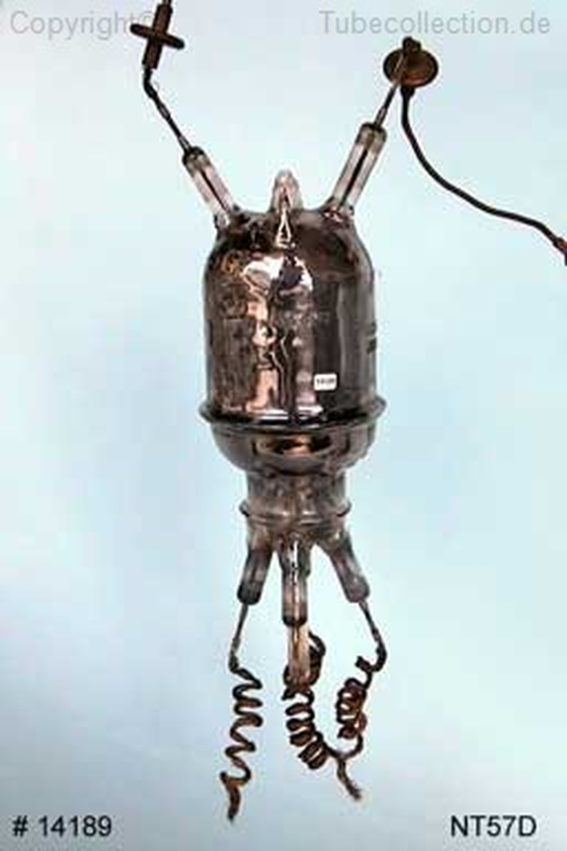
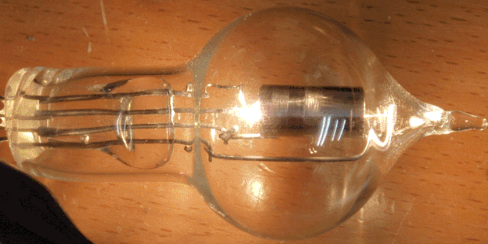
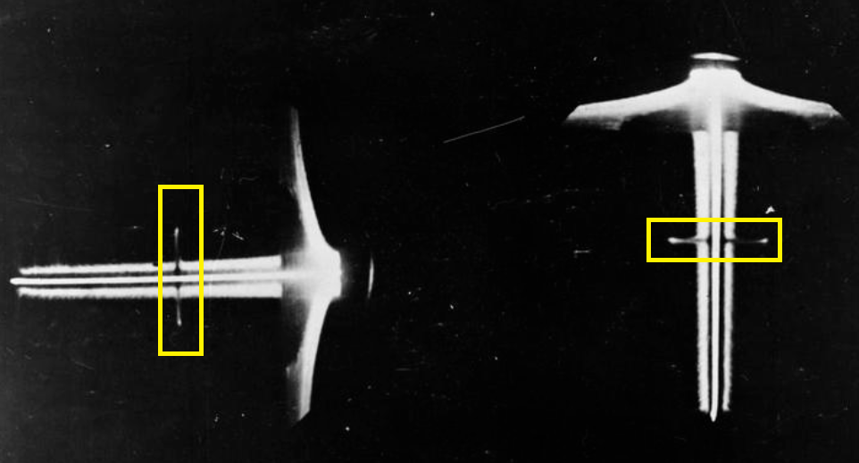

레이더 개발 이야기 (10) - 대공포 레이더의 공헌
게시: 2022-11-24T06:30:58+09:00
<육군은 어떻게 1.5m 안테나를 썼나?> 방공포용 레이더는 그 부족한 성능과 기능에도 불구하고 공군의 항공기 탑재용 레이더 개발에 결정적인 기여를 함. 가장 큰 기여는 안테나의 길이. 거대한 구조물로 만들어진 공군의 Chain Home 레이더와는 달리 방공포용 안테나는 적 폭격기의 방향 탐지를 위해 송수신 안테나를 포가 위에 올려놓고 회전시켜 가며 써야 했으므로 안테나가 비교적 짧아야 했음. 이를 위해서 육군 연구실인 Army Cell은 1930년대 중반에 개발된 NT57D 진공관(사진1)을 사용하여 45MHz의 주파수를 만들어냄.

이 NT57D 진공관은 영국내 제조업체들에게조차 1938년에야 그 존재가 공개된, 당시로서는 가장 최신인 기밀 전자부품. 그리고 그 기술의 핵심은 텅스텐 전극과 함께... 외외로 밀봉 기술. 진공관이 제 성능과 기능을 내려면 고온에서도 밀봉 상태를 유지해야 하는데, 그러자면 유리관에서 구리선이 빠져나가는 그 구멍의 밀봉이 중요. 그러나 진공관 재료인 유리의 열팽창률과 구리선의 열팽창률이 다르기 때문에 고온에서도 그 밀봉 상태를 유지하는 것이 쉽지 않았고 유리가 깨지거나 진공이 새는 경우가 많았음. 기존 진공관에서는 그 밀봉을 위해 납땜을 이용하기도 했으나 이건 진공관이 고출력을 내면서 생기는 고온에서서 밀봉 상태를 유지하는 것이 쉽지 않았음. 전에 언급했던 RNSS (Royal Navy Signal School)에서는 graded-glass라는 기술을 이용하여 이 문제를 해결. 열팽창률이 조금씩 다른 silica(석영, 이산화규소)를 그 좁은 전선 구멍에 단계적으로 채워넣어 고온에서도 열팽창으로 인한 스트레스를 완충시키도록 한 것.

(진공관은 전구가 아니지만 가열된 음극에서 양극으로 전자가 날아가면서 음극이 닳아 없어지는 구조이므로, 그림처럼 상당한 고열을 발생시켰고 이에 따라 쉴새없이 고장이 발생. 진공관은 사실상 소모품이었음.)
이 NT57D 진공관으로 만든 45MHz 전파의 파장 길이는 대략 6.6m. 안테나 길이는 파장의 1/4 길이가 가장 효율이 좋았으므로 이 레이더에서는 약 1.5m 길이의 안테나를 쓸 수 있게 되었고, 이는 곧장 항공기에도 장착할 수 있는 길이. 그 다음 문제는 적기의 방위각을 어떻게 탐지하느냐 하는 것. 항공기에 탑재하는 레이더는 단순해야 했으므로, 항공기 위에 붙인 안테나를 방공포용 안테나처럼 빙글빙글 돌려보는 장치를 탑재할 수도 없었음. 그런데 이에 대해서도 육군 레이더 연구실이 실마리를 제공함.
<그냥 대충만 하면 돼!> Army Cell에서 만든 단순한 안테나는 짧은 길이에 쓰기도 편했으나 반(半)지향성이라 그 전파는 거의 60도 각도의 부채꼴을 그리며 날아감. 따라서 반사파를 포착한다고 해도 이게 과연 어느 각도에서 날아온 것인지 정확한 방위각을 알아내기가 애매했음. 공군에서는 전에 언급한 Bellini–Tosi 효과를 이용한 방위각 측정기(radiogoniometer)를 이용했으나, 육군의 대공포용 레이더는 어차피 정확한 거리 측정이 중요했을 뿐 방위각 측정은 별로 중요하지 않았음. 왜? 어차피 대공포 사정거리가 육안으로 보이는 거리 안쪽이었기 때문에 그냥 눈으로 보고 쏘면 되었기 때문. 하지만 로열 에어포스가 항공기에 탑재하려던 레이더는 아무것도 보이지 않는 깜깜한 밤중에 적기를 찾으려고 만드는 것이다보니 대공포용 레이더보다는 방위각 측정이 꽤 중요했음. 그런데 뜻밖에도 바로 그 대공포용 레이더가 해결책을 제시. 초기 개념을 잡을 때와는 달리, 실제로 운용할 생각을 해보니 대공포용 레이더에서도 어느 정도의 방위각 측정이 필요했고, 그래서 육군은 그를 위한 장치를 이미 만들어 두었음. 일단 대공포용 레이더에서도 방위각 측정이 필요했던 이유는, 여러 편대의 폭격기들이 어느 정도 떨어진 거리를 두고 날아올 경우가 있기 때문. 30도 방향에서도 폭격기 한 무리가 날아오고 있고 60도 방향에서도 다른 한 무리가 날아오고 있는데, 지금 레이더에서 측정된 고도가 하나는 2km이고 다른 하나는 3km라면 매우 곤란. 어느 편대가 2km이고 어느 편대가 3km인지 알아야 지금 30도 방향을 향한 대공포 시한신관의 세팅을 정할 수 있기 때문.
(저렇게 많은 폭격기 중에서 지금 내 레이더가 2km라고 알려주는 고도는 어느 놈의 고도이지?)
다만 여전히 눈에 보이는 폭격기들이므로 아주 정확한 방위각 측정이 필요했던 것은 아니고 지금 측정되는 거리가 대충 왼쪽 편대까지의 거리인지 오른쪽 편대까지의 거리인지만 구분할 정도면 됨. 그리고 Army Cell에서는 꽤 기발한 방법으로 이걸 구현해냄. 일정 거리를 두고 한쌍의 평행한 수신 안테나를 좌우 양쪽에 배치한 것. 당시 쓰던 레이더 화면인 A-scope에서는 목표물이 더 가까울 수록 더 강한 peak가 나타났는데, 수신 안테나 정면으로부터 목표물이 왼쪽에 있다면 왼쪽 안테나의 peak가 더 높을 것이고 오른쪽에 있다면 반대일 것. 그러면 조금씩 수신 안테나를 회전시켜서 좌우 안테나로부터의 신호가 서로 같은 크기로 나타나는 지점을 찾으면 되는 것. 조작수가 쉽게 그 지점을 찾을 수 있도록 좌우 안테나의 신호는 서로 위아래로 반대반향으로 나타나도록 배치.
이걸 공군에서는 전투기에 어떻게 활용했을까? 전투기에는 좌우 날개가 있으니 그 양쪽 날개 끝에 수신 안테나를 달았음. 회전은 어떻게 시켰을까? 전투기 기수를 좌우로 돌리면 되었음. 조종사는 등 뒤에 탄 레이더 조작수가 가령 '왼쪽으로 왼쪽으로... 아니 너무 틀었음, 약간 오른쪽으로.... OK, 이대로 직진' 처럼 불러주는 대로 조종을 하면 결국 적기를 찾을 수 있었음.

(초기 항공기 탑재 레이더인 AI Mark IV radar의 scope 화면. 왼쪽이 고도, 오른쪽이 좌우방위각을 표시. 맨 오른쪽, 그리고 맨 위쪽의 커다란 삼각형 신호는 지상의 반사파이므로 무시. 고도이든 좌우방위각이든 중간 정도에 보이는 아래 위 한쌍의 깜빡이 신호(blip)로 판단. 잘 안보이므로 노란색 사각형을 그려놓았음. 왼쪽의 고도는 위아래 신호 강도가 거의 비슷하므로 적 폭격기는 내 전투기와 거의 동일한 고도에 있는 것이고, 오른쪽의 좌우방위각은 왼쪽보다 오른쪽 신호가 조금 더 길게 나왔으므로 적 폭격기는 내 전투기보다 약간 오른쪽에 있는 것. 조종사가 저 신호를 읽어가며 조종을 하는 것은 사실상 불가능하므로 레이더 조작수가 반드시 필요.)
그러나 물론 항공기 탑재용 레이더가 실용화되려면 풀어야 할 문제가 무진장 많았음.